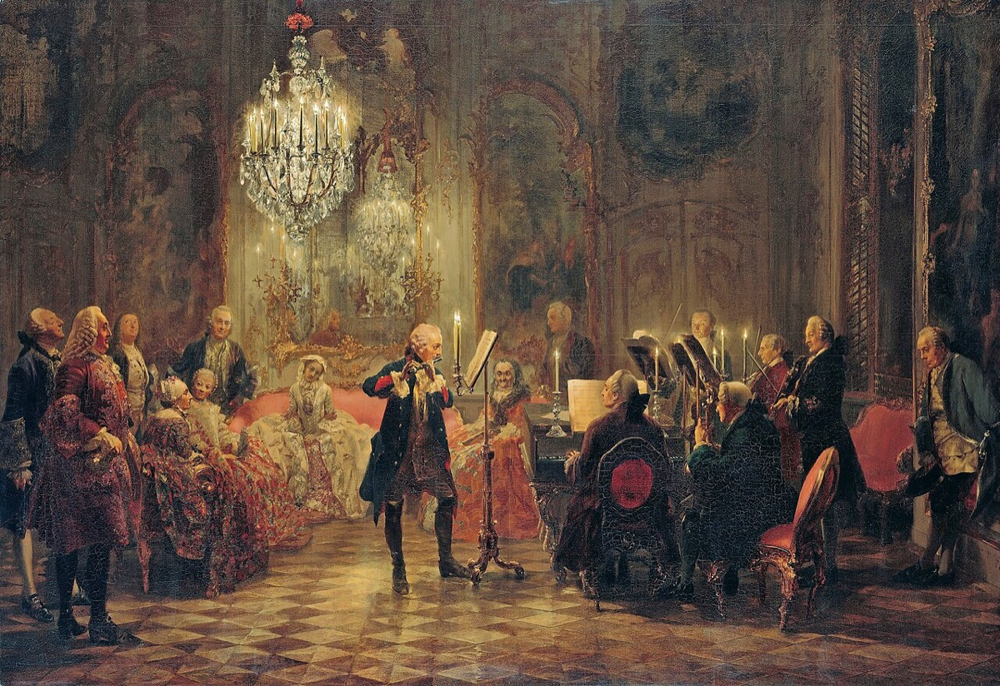

Musical Offering (Musikalisches Opfer)
Occasion — The royal theme, answered
Dating — Composed, engraved, and dedicated to Frederick the Great within two months of the May 1747 Potsdam visit.
Recommended recording — Jordi Savall, Le Concert des Nations, Musikalisches Opfer (Alia Vox) · Recordings Shelf
Score — IMSLP (free score)

The Musical Offering is the Potsdam evening, monumentalized. In May 1747 Frederick the Great handed Bach a theme at the keyboard; within two months Bach had composed, engraved, and dedicated to the king an entire volume demonstrating everything that single chromatic subject — the thema regium, the king's theme — can become. The whole work is an answer, delivered in print, to a challenge issued in person, and every page of it carries the double character that makes it unique in Bach's output: an act of courtesy that is also, unmistakably, a display of power.
The volume's pillars are two ricercars — and the choice of that archaic word for fugue is itself pointed, a deliberate reach back past fashion to the learned tradition Frederick's galant court regarded as obsolete. The three-voice ricercar approximates what Bach improvised at Potsdam that night, on the spot, before the king. The six-voice ricercar is the one he had declined to improvise — a feat he would not attempt extempore, and instead delivered in print: the grandest strict fugue he ever wrote for keyboard. Where the evening's challenge had found the limit of what even Bach could do without preparation, the publication answered: given time, here is what the theme actually contains. The pairing is the work's autobiography in two movements — the improviser's brilliance and the composer's patience, side by side, on the same royal subject.
Around the ricercars stand ten canons, and several of them are engraved as riddles: a single line of music and a cryptic Latin motto, with the realization left to the reader — the motto hinting at the rule by which the remaining voices must be derived. Solve it yourself, Majesty. The wit is not incidental; it is the medium. Among them is a canon that modulates up a whole tone with each repetition, spiraling perpetually higher, inscribed "as the notes ascend, so may the King's glory" — flattery and contrapuntal tour de force fused so completely that neither can be extracted from the other. And then, completing the volume, a four-movement trio sonata for flute, violin, and continuo, written in the king's own beloved galant flute style — Frederick was a flutist, and this is music he could genuinely enjoy — with the severe royal theme smuggled, again and again, through its fashionable textures. The sonata plays a double game worth listening for on its own: the surface offers the pleasures of the modern style Frederick prized, while the substance keeps returning to the material the king set as a trap, absorbed now into the very idiom that was supposed to have superseded such learning.
The single thing to hear above all is the six-voice ricercar. Six real voices at a keyboard, each with its own life, no seams showing — two hands sustaining a texture that ought to require a consort. It is the summit of the mountain whose base camp is the two-voice Inventions: the same discipline of independent voices, raised from the pedagogical minimum to the practical maximum, a quarter-century of contrapuntal craft compressed into one movement. For the craft essays this work is home ground twice over — the canon and riddle essays live here, and so does the essay on Bach's wit, because the whole Offering is courtesy with an edge: every genuflection toward the throne doubles as a demonstration that in this kingdom, the one made of counterpoint, the visitor from Leipzig ruled.
The work's most famous afterlife came in 1935, when Anton Webern orchestrated the six-voice ricercar — the melody passed from instrument to instrument, phrase by phrase, tone color itself made structural. It is Arc III's modernist Bach in a single gesture: the twentieth century discovering that a fugue written to answer a king could be heard as pure, abstract structure, and claiming it for the future.
The evening that provoked it all: Potsdam, May 1747. Where the six-voice summit's path begins: the Inventions and Sinfonias.
Original print and dedication, July 1747 (New Bach Reader)
Wolff, The Learned Musician, ch. 12
→ full bibliography & links